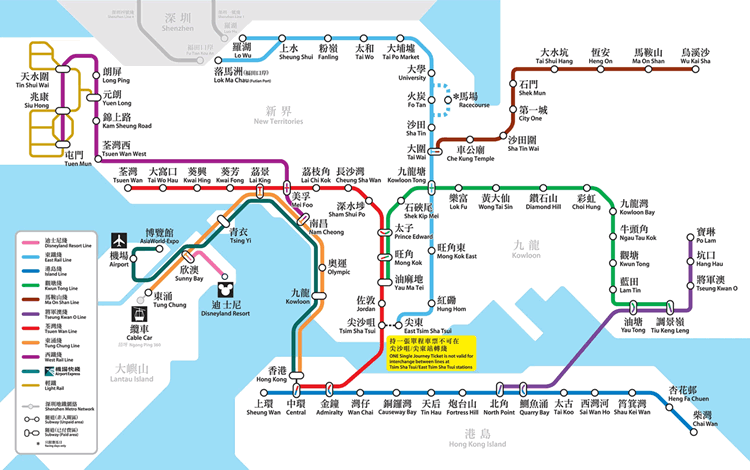
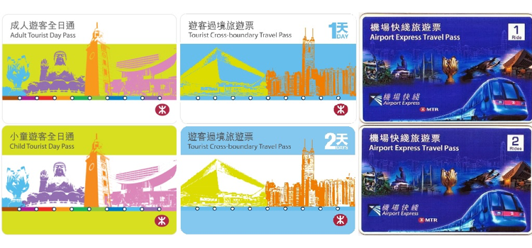

港铁MTR
香港的地铁包括一个地下的地铁系统和一个地面的轻轨系统，运行在市内和周边地区。一张单程票的基本票价是HKD 4.5块，并且，你可以在每次乘坐的时候，地铁大约从早上6点钟开始运行，到午夜1点结束。
港铁路线图:

更详细港铁换乘信息及各站出口信息，请浏览以下港铁官方网站。
网址：http://www.mtr.com.hk/
港铁由香港铁路有限公司运营，铁路系统十条线路覆盖香港多个地区，轻易到达不同观光地点。香港地铁非常清洁、高效，平均3-5分钟一班车，车费由4.5起，根据行驶的距离逐渐增加接受「八达通」卡或现金购票。
在地铁里的自动售票机购买单程票，也可以用八达通卡。办一张八达通卡的费用为HKD 150块，其中HKD100块可以使用，HKD50块是押金，如果购买卡三个月内退还卡要扣9块手续费，可以取回HKD50块押金和卡内剩余的
钱。
如您一天内多次乘搭港铁，不妨购买游客全日通，凭卡可在发票当日起一个月内任何一天，无限次搭乘港铁，港铁推出成人游客全日通及小童游客全日通，票价分别为65及30港币。

公共巴士
巴士是另一种常用的交通工具，在街上大部分都是双层空调巴士，舒适干净。巴士一般10-20分钟一班车。同一线路的巴士采用分段式或统一式收费，上车时您可以以「八达通」卡付款，或支付现金，但不设找兑。

详情请看官网：
九巴：http://www.kmb.hk/gb/
龙运巴士：http://www.lwb.hk/tc/
城巴/新巴：http://www.nwstbus.com.hk/
公共小型巴士
在街上，16座公共小型巴士随处可见，小巴分为两种，绿色小巴按固定路线、班次和车资提供服务，上车时便要以「八达通」卡或现金（不设找兑）付款。
而红色小巴是没有固定的班次和车资，一般到站下车才以「八达通」卡或现金付款。
小巴的特色是不会一站一站地停车，下车时候的向司机喊“落车”或 “要落”，小巴才会中途停站。
计程车
如您需要点到点直达交通服务，您可以在街上扬手呼叫计程车，所有合法计程车均按里程表收费，起程价位约19-24港币，大多只收取现金（可找兑）。出租车分为三种颜色，红色出租车可在市区行驶，换句话说，它不能进入大屿山。绿色出租车是只可行驶于新界，不会进入市区。而最后蓝色出租车只会可行驶于大屿山区。
出租车招呼站多设在饭店和商场门口，以及地铁站周围，不过在香港可以在路上拦车搭乘。一般香港岛和九龙的出租车起跳价是HKD 24（开始的2公里），之后每0.2公里或者等候1分钟加HKD 1.7块，如果需要过海，过桥，或者过隧道需要加钱，行李箱放置行李也须要加HKD6块，更多详情可参考以下运输署网址。
网址：http://www.td.gov.hk/
渡轮
这里说的渡轮是指的天星小轮，在香港已有逾一个世纪,是便宜的渡海交通工具。近年被国家地理杂志评为“人生50个必到的景点”之一，天星小轮在九龙的尖沙咀及香港岛的中环、湾仔间穿梭,维多利亚港美景可在乘 船途中尽揽眼底。
香港三面环海，除市区外，附近有不少观光旅游岛屿。搭乘渡轮既可以便宜的价格方便到岛，沿途又可以欣赏海港明媚景色。您可以到中环渡轮码头乘搭普通船或快速船到坪洲、长洲、南丫岛、大屿山、愉景湾、珀丽湾及马湾，
单程船费只大约40港币以下。如您希望欣赏享誉全球的维多利亚港美景，就必定要乘搭天星小轮，渡轮来往九龙的尖沙咀及香港岛的中环、湾仔，8-20分钟一班，单程船费只需3港币以下，以「八达通」卡、现金（不设找兑）或购买代币（可找兑）付款。
详情请浏览官网：
长洲，大屿山及坪洲航线
网址：www.nwff.com.hk
南丫岛及坪洲航线
网址：www.hkkf.com.hk
愉景湾航线
网址：http://www.dbcommunity.hk/
珀丽湾及马湾航线
网址：http://www.pitcl.com.hk/
天星小轮有限公司
网址：http://hanweb.kanhan.com/
有轨电车
电车又名「叮叮」，别名源于司机在进站或提醒路人让路时按响警铃发出警告的「叮叮」声。电车由香港电车有限公司运营，是香港历史悠久的交通工具。每天运行六条路线连接香港岛坚尼地城至筲箕湾。成人单程车费只需2.3港币，下车时以八达通或现金（不设找兑）缴付车资。
电车由早上行驶至午夜,搭乘电车,由车尾入口上车, 然后于车头出口支付车费,您可选择以硬币或“八达通”卡付费。搭乘叮叮车，找个最佳的观景位置，可以清楚地看到市区的景色，非常过瘾，详情请浏览以下官网。
网址：https://www.hktramways.com/